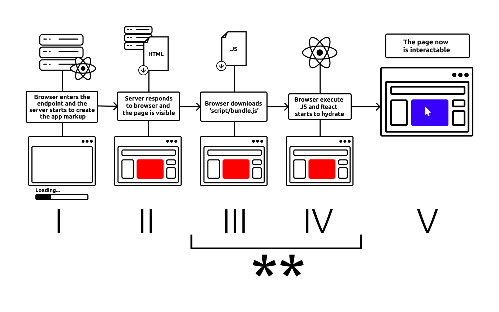
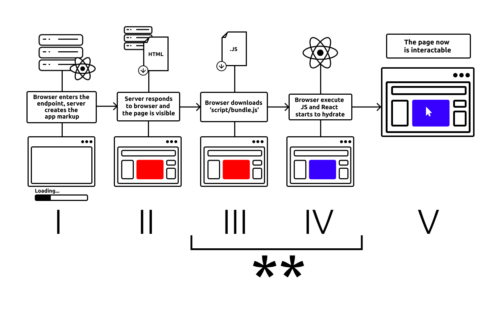

server-reason-react via ReactDOM.renderToString, ReactDOM.renderToStaticMarkup or ReactDOM.renderToStream generate the HTML markup on the server. When the page loads in the browser, React.js performs a process called "hydration".
Hydration attaches event handlers into the existing HTML elements, using reason-react's ReactDOM.hydrateRoot. In case of not having hydration and just using render (via ReactDOM.renderRoot), React will re-render the entire page from scratch, which may cause layout shifts and be slower than hydration.
For hydration to work correctly, the initial markup from the server must match exactly what React loads on the client. React will throw a hydration error if there is a mismatch.
For example:
<span>Hello from server</span><span>Hello from client</span>With this mismatch, hydration will fail and React will re-render on the client. This will result in worse performance and user experience, like layout shifts and other annoyances.
Read more about it in the React documentation(https://react.dev/reference/react-dom/client/hydrateRoot).
Commonly, hydrate errors will appear in the console as:
Text content does not match server-rendered HTML.
Let's start by triggering a hydration error on purpose. Take a look at this code:
[@react.component]
let make = () => {
let backgroundColor = switch%platform () {
| Server => "red"
| Client => "blue"
};
<div className=backgroundColor />;
};We use switch%platform to provide different values on the server and client. To understand how switch%platform works, look at the browser_ppx page.
And let's see the diagram below, which shows how the code will behave:
* React to complain about a hydration error because of the content of className attribute from the server is className="red" (IV) and what it expects on the client during hydration is className="blue" (V).
To fix this, the server and client render must provide the same markup.
There are cases where your server doesn't have all the information needed to render the same markup on the client. For example, the client can access the DOM and run some calculations like window.innerWidth or getBoundingClientRect.
The trick here is to make sure the server-render and the first client-render have the same markup, while the second client-render can have any value. This way, React will be happy with the first client-render and will not throw a hydration error.
To make it happen, we can check if the client is mounted and then change apply the final value. This is often done with a hook that will be executed only after the client is mounted.
module UseMounted = {
let use = () => {
let (isMounted, setIsMounted) = React.useState(() => false);
React.useEffect0(() => {
// The useEffect hook will be executed only on the client and after the hydration
setIsMounted(_ => true);
None;
});
isMounted;
};
};
[@react.component]
let make = () => {
let isClientMounted = UseMounted.use();
let backgroundColor = isClientMounted ? "blue" : "red"
<div className=backgroundColor />;
};With a code like this one, the flow will be:
** As we can see, isClientMounted is false on III, IV and V and eventually true on VI. So there is no difference between III and IV, and React will be happy with it.
In this case, we don't even need switch%platform, as useEffects only runs on client and the value is provided on the client.
Those helpers are useful, but server-reason-react doesn't provide any, this code should live in your project.
UseMounted is a hook to check if the component has mounted.
let use = () => {
let (isMounted, setIsMounted) = React.useState(() => false);
React.useEffect0(() => {
setIsMounted(_ => true);
None;
});
isMounted;
};You should use UseMounted whenever you have to deal with variables inside a component. For different JSX, take a look at <ServerOrClientRender/> or <ClientOnly/>.
Example:
let isFocusable =
isClientMounted ? children->isFocusableElement : false;Even with isClientMounted, the content MUST compile on native. If the client content is not native compatible, you can use %browser_only.
let%browser_only getAnswer = () => 42
let answer = isClientMounted ? getAnswer() : 0;1 | let answer = isClientMounted ? getAnswer() : 0;
^^^^^^^^^^^
**Error** (alert browser_only): File.getAnswer
This expression is marked to only run on the browser where JavaScript can run. You can only use it inside a let%browser_only function.As you can see, getAnswer is a browser_only content and it must run under a %browser_only:
let%browser_only getAnswer = () => 42
let answer = isClientMounted ? [%browser_only () => getAnswer()]() : 0;switch%platform and %browser_only with isClientMountedswitch%platform and browser_only are extensions that help us discarting parts of the same file for both native and JavaScript without breaking the compiler (read more about them here: browser_ppx page).
So we should use switch%platform when we don't have a single way to provide the same value. If there is a way to provide the same value, but not in a single way, you'll need switch%platform like following:
let foo = switch%platform () {
| Server => foo_native()
| Client => foo_client()
}Here, foo will have the same value on both targets. There's no need for isClientMounted because Hydrate will never throw an error.
The usage of isClientMounted forces the execution of the code to behave proeprly, but it does not avoid compiler error because the code needs to compile on both targets. So, you will need isClientMounted and browser_only together:
let%browser_only foo_cant_compile_on_native = () => "Hey"
let value = isClientMounted
? [%browser_only () => foo_cant_compile_on_native()]
: "Yah"Remember, switch%platform is a helper to be used only when we don't have an alternative. However, we are constantly providing new universal content on server-reason-react, so you can ping us when you find something not universal that you think could be.
[@react.component]
let make = (~server: unit => React.element, ~client: unit => React.element) => {
let isClientMounted = UseMounted.use();
switch (isClientMounted) {
| false => server()
| true => client()
};
};ServerOrClientRender is a React Component that helps to provide different JSX markup on server and client powered by UseMounted to avoid hydrate issues.
Example:
[@react.component]
let make = () => {
<ServerOrClientRender
server={() => <RedComponent />}
client={() => <BlueComponent />}
/>;
};Again, even with ServerOrClientRender, the content MUST compile on native. If the client content is not native compatible, you must use %browser_only.
// Imagine a BlueComponent.re being a client only component
// Foo.re: a universal file
<ServerOrClientRender
server={() => <RedComponent />}
client={() => <BlueComponent />}
/>1 | <BlueComponent
^^^^^^^^^^^^^
**Error**: Unbound module BlueComponentAs you can see, BlueComponent is not available on native, cause it's client only and must run under a %browser_only:
<ServerOrClientRender
server={() => <RedComponent />}
client={
[%browser_only () => <BlueClientComponentOnly />]
}
/>The ClientOnly component is built on top of ServerOrClientRender. It provides a helper to easily apply client-side content.
[@react.component]
let make = (~children: unit => React.element) => {
<ServerOrClientRender client=children server={() => RR.null} />;
};Use <ClientOnly/> when the server JSX can be empty (RR.null) and only want to render JSX on the client side.
<ClientOnly>
{() => React.string("Hello World")}
</ClientOnly>Again, we should use %browser_only even when using ClientOnly since the content MUST compile on native.